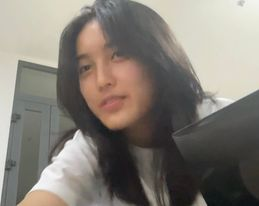
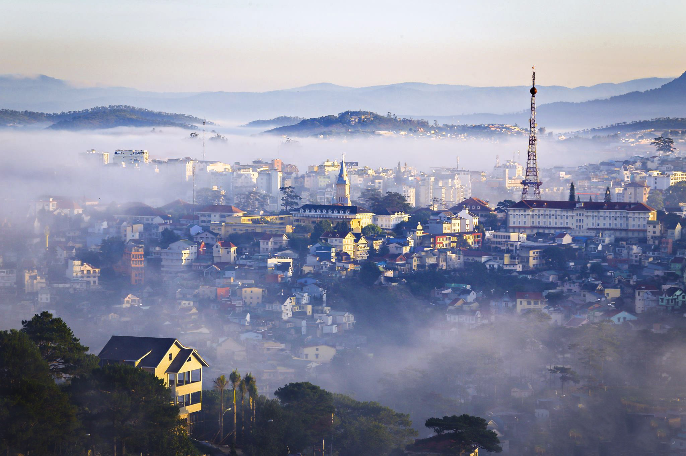
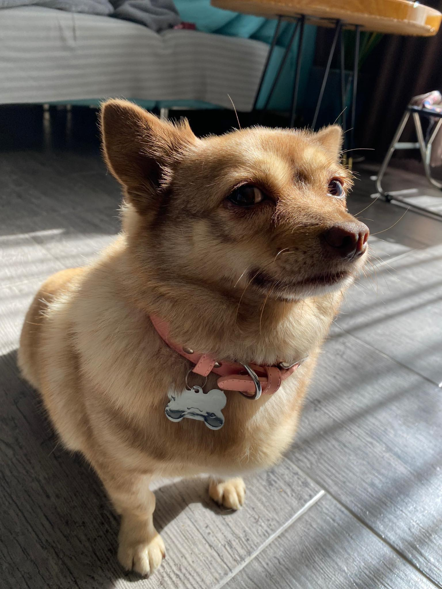

About Me
I was born and raised in Dalat (Vietnam) - being well-known as City of Eternal Spring.


Hobby:
- Studying and exploring new things.
- I love reading book, especially fantasy and self-help book.
- I enjoy watching Youtube and listening to podcasts (some of my favourite channels are: Ali Abdaal, Vietcetera, Emma Chamberlain).
- Listening to kpop musics (my favourite idol is Seulgi - Red Velvet).
Pet:
I have a cute dog - her name is Nau (which means "brown" in English). You are free to enjoy her cuteness :D

Currently (2024), I am a senior in International Business major at UEH-ISB. I'm pursuing to become a business analyst/ strategist/ management consultant.